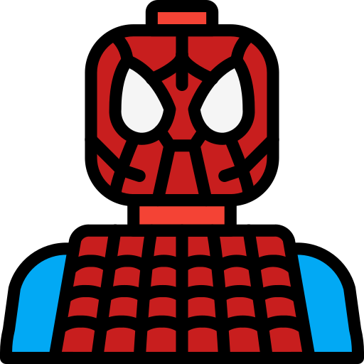

There Was an Idea
The Avengers Initiative was the brainchild of S.H.I.E.L.D. Director Nick Fury. He first approached Tony Stark with the idea, following Tony’s defeat of Obadiah Stane and his subsequent public announcement that he was Iron Man. Fury kept his eye on several potential members, as Bruce Banner struggled with life as the Hulk, the Asgardian Thor appeared on Earth, and Steve Rogers, AKA World War II hero Captain America, was discovered alive decades after his apparent death. In the meantime, some of S.H.I.E.L.D.’s most skilled members, Black Widow (Natasha Romanoff), and Hawkeye (Clint Barton), were making a name for themselves and impressing Fury.
Once the Asgardian trickster god Loki arrived on Earth and absconded with the massively powerful object known as the Tesseract—possessing Hawkeye and turning him into his brainwashed pawn in the process—Fury found it necessary to finally bring together his potential super team, calling in Romanoff, Banner, Rogers and Stark. Captain America and Iron Man, assisted by Black Widow, were able to capture Loki, but during their flight back to S.H.I.E.L.D., Thor arrived, attempting to bring his brother back to Asgard to face justice. A fight ensued between Thor and Iron Man, but Captain America broke it up, and the group all returned with their prisoner, Loki, to the S.H.I.E.L.D. Helicarrier.
AVENGERS MEMBERS
Iron Man
Genius inventor Tony Stark continued his father Howard Stark’s weaponry business after his parents’ untimely deaths and flew it to even greater heights of innovation. While in Afghanistan to demonstrate a new missile for the U.S. military, Stark’s convoy came under fire by a terrorist group known as the Ten Rings and he was severely wounded. Taken prisoner by the group, Stark awoke in their headquarters to learn that shrapnel near his heart had nearly cost him his life, but swift action by scientist and fellow prisoner Ho Yinsen.
Captain America
Envious of his friend Bucky Barnes’ military enlistment, and undeterred by his own multiple rejections by the U.S. Army, physical weakling Steve Rogers made one more attempt to join the march of men to fight for their country in the dark days of World War II. Rogers’ valiant wish to fight bullies wherever they were grabbed the attention of scientist Dr. Abraham Erskine, and he handpicked the idealistic young man for the Army’s Super-Soldier program under his supervision.
Ant Man
Scott Lang is a fictional character portrayed by Paul Rudd in the Marvel Cinematic Universe (MCU) media franchise, based on the Marvel Comics character of the same name and known commonly by his alias, Ant-Man. He is depicted as a thief-turned-superhero after being granted access to Hank Pym's technology and training, specifically the use of an advanced suit that allows him to change sizes, as well as communicate with ants. He is recruited by Steve Rogers to join the Avengers.
The Hulk
The Hulk is a superhero appearing in American comic books published by Marvel Comics. Created by writer Stan Lee and artist Jack Kirby, the character first appeared in the debut issue of The Incredible Hulk (May 1962). In his comic book appearances, the character, who has dissociative identity disorder (DID), is primarily represented by the alter ego Hulk, a green-skinned, hulking and muscular humanoid possessing a limitless degree of physical strength, and the alter ego Dr. Robert Bruce Banner, a physically weak, socially withdrawn, and emotionally reserved physicist, both of whom typically resent each other.
Spiderman
Spider-Man is a superhero appearing in American comic books published by Marvel Comics. Created by writer-editor Stan Lee and artist Steve Ditko, he first appeared in the anthology comic book Amazing Fantasy #15 (August 1962) in the Silver Age of Comic Books. He has been featured in comic books, television shows, films, video games, novels, and plays. ally, Peter was depicted as a teenage high-school student and an orphan raised by his Aunt May and Uncle Ben in New York City after his parents Richard and Mary Parker died in a plane crash.
Mighty Thor
Thor is a prominent god in Germanic paganism. In Norse mythology, he is a hammer-wielding god associated with lightning, thunder, storms, sacred groves and trees, strength, the protection of humankind, hallowing, and fertility. Besides Old Norse Þórr, the deity occurs in Old English as Þunor, in Old Frisian as Thuner. Thor is a prominently mentioned god throughout the recorded history of the Germanic peoples, from the Roman occupation of regions of Germania, to the Germanic expansions of the Migration Period, to his high popularity during the Viking Age.
Doctor Strange
Dr. Stephen Vincent Strange is a character appearing in American comic books published by Marvel Comics. Created by Steve Ditko, the character first appeared in Strange Tales #110 (cover-dated July 1963). Doctor Strange serves as the Sorcerer Supreme, the primary protector of Earth against magical and mystical threats. Strange was introduced during the Silver Age of Comic Books in an attempt to bring a different kind of character and themes of mysticism to Marvel Comics. The character starts as a brilliant but egotistically arrogant neurosurgeon who is injured in a car accident.
Clint Barton
Hawkeye (Clinton Francis "Clint" Barton) is a fictional character appearing in American comic books published by Marvel Comics. Created by writer Stan Lee and artist Don Heck, the character first appeared as a supervillain in Tales of Suspense #57 (September 1964) and later joined the Avengers as a superhero in The Avengers #16 (May 1965). He has since been a prominent member of several Avengers teams, founding the West Coast Avengers, briefly marrying and subsequently divorcing Bobbi Morse / Mockingbird, adopting the Ronin alias after his death and resurrection before mentoring Kate Bishop.